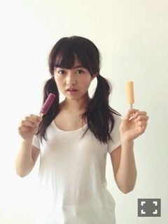
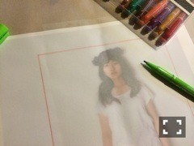
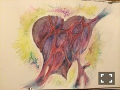
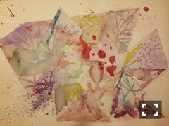

| 2014/08 15 Fri | 無重力を歩く。592回目 |
ブドウ

アイス
インディアン
発売中のEX大衆。
カメラマンは乃木坂派で
お世話になった辰巳ちえさん！
前回の個人pv特集でも
撮ってもらったけど、
本格的にひとりでは初めて。
ずっと撮りたかったって
言ってくださって嬉しい...
古着の衣装だったり
小物で遊んだり...

セルフ落書きいえーい
ソロで5ページも有難い。
ふざけて撮ったのも
ちっちゃく載せてもらえてるよー
わーい
口開けてベーってしてるの
お気に入りかな。
ぜひ見てください！
9月発売の季刊乃木坂もだけど、
撮ってもらってる時間が好きだ。
自由に動いてるのを
撮ってもらえるんだもん。
自分、楽しんでるな〜
って本当に思う。
素敵に撮って貰えるように
自分自身が楽しまなきゃね。
ブログの写真も更に工夫していこ。
「季刊 乃木坂 vol.3」
メイキング公開されたから
こちらもチェックしてね。
／
描いたり作ったりなんかしらしたら
載せてみるこーなー
＼

だいぶ前メールで送った
鉛筆画だった一枚を塗ってあ！
水彩色鉛筆良いっ！

描いては濁った部分を眺める
こっちは普通の絵の具。
今日は2枚。
のぎ天のパリクイズ
優勝しちゃった！びっくり。
ピカピカのエッフェル塔は
階段のところに飾った！
アメリ見なきゃ。
この前のぎ天の収録したんだけど、
めっちゃ楽しかった〜
再来週かな？
絶賛ライブリハ中です。
16日は大阪！！
アンダーライブからメンバーも
変わってきていると思います。
良いものになるように頑張る！
遅くなったけど、
かなりん、飛鳥
お誕生日おめでとうっ
2人ともいつもダル絡み
ありがとう。ラブ！！！！←

綺麗な50°でさようなら
まりか
コメント(445)
2014/08/15 00:06